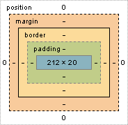

Строчные элементы не создают переносов строки до и после себя. Такие элементы располагаются в строке слева направо. Если строчный элемент не помещается в родительский контейнер, то он переносится на следующую строку.
Стандартная блочная модель отвечает на основной вопрос: Сколько же в итоге места будет занимать элемент?
Ответ следующий: Область, занимаемая блочным элементом, складывается из его ширины и высоты содержания, внутренних и внешних отступов, ширины рамок .
Схема блочной модели:
Проблему с шириной тянущихся полей решить сложно. Идеальным вариантом было бы изменение алгоритма расчета ширины элемента, чтобы свойство width задавало не ширину содержания, а общую ширину.
К счастью, такая возможность была добавлена в CSS3 с помощью свойства box-sizing, которое уже поддерживается большинством современных браузеров.
Это свойство имеет два значения: